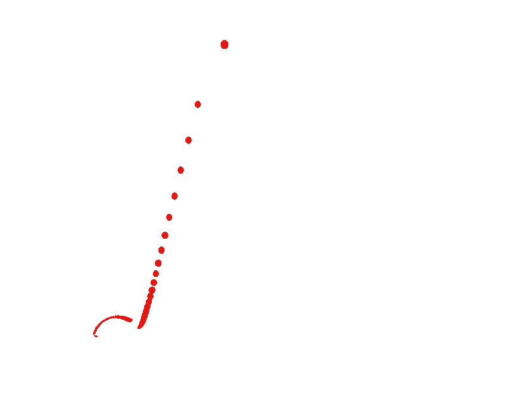
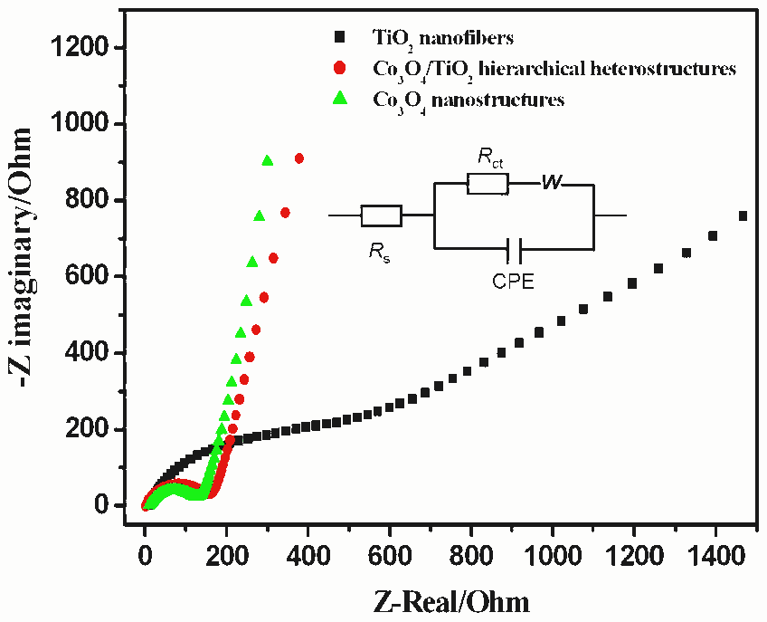
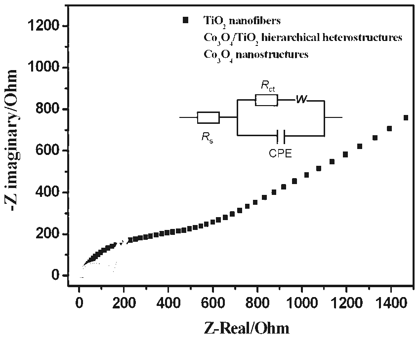

<?xml version="1.0" encoding="UTF-8"?>
<ul xmlns="http://www.w3.org/1999/xhtml">
 <li file="/Users/pm286/workspace/cmdev/ami3/src/test/resources/org/contentmine/ami/battery10/PMC3463005/pdfimages/image.7.2.66_269.69_234/octree/channel.e41712.png">
  <p>channel.e41712
   <span style="background-color:#e41712">__</span>
  </p>
  
 </li>
 <li file="/Users/pm286/workspace/cmdev/ami3/src/test/resources/org/contentmine/ami/battery10/PMC3463005/pdfimages/image.7.2.66_269.69_234/octree/octree.png">
  <p>octree
   <span style="background-color:white">__</span>
  </p>
  
 </li>
 <li file="/Users/pm286/workspace/cmdev/ami3/src/test/resources/org/contentmine/ami/battery10/PMC3463005/pdfimages/image.7.2.66_269.69_234/octree/channel.19f216.png">
  <p>channel.19f216
   <span style="background-color:#19f216">__</span>
  </p>
  
 </li>
 <li file="/Users/pm286/workspace/cmdev/ami3/src/test/resources/org/contentmine/ami/battery10/PMC3463005/pdfimages/image.7.2.66_269.69_234/octree/channel.fdfdfc.png">
  <p>channel.fdfdfc
   <span style="background-color:#fdfdfc">__</span>
  </p>
  
 </li>
 <li file="/Users/pm286/workspace/cmdev/ami3/src/test/resources/org/contentmine/ami/battery10/PMC3463005/pdfimages/image.7.2.66_269.69_234/octree/binary.png">
  <p>binary
   <span style="background-color:white">__</span>
  </p>
  
 </li>
 <li file="/Users/pm286/workspace/cmdev/ami3/src/test/resources/org/contentmine/ami/battery10/PMC3463005/pdfimages/image.7.2.66_269.69_234/octree/channel.191919.png">
  <p>channel.191919
   <span style="background-color:#191919">__</span>
  </p>
  
 </li>
</ul>
